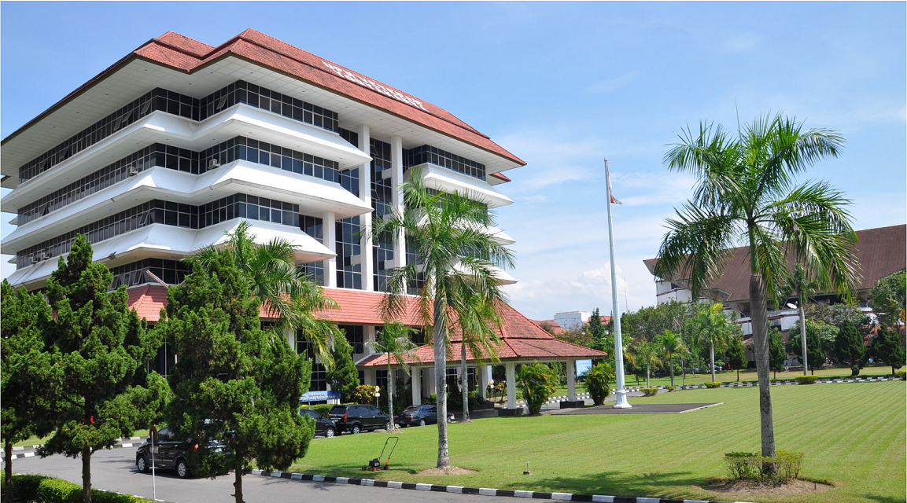
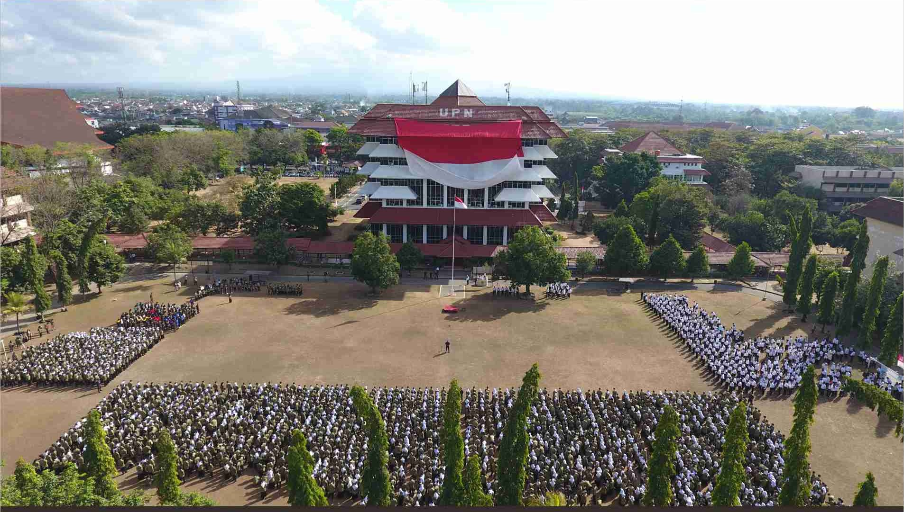

Gedung Rektorat Panglima Besar Sudirman
Luas: 10.000 meter persegi
Alamat: UPN Veteran Yogyakarta, Jl. Ring Road Utara, Ngropoh, Condongcatur, Kec. Depok, Kabupaten Sleman, Daerah Istimewa Yogyakarta 55281


